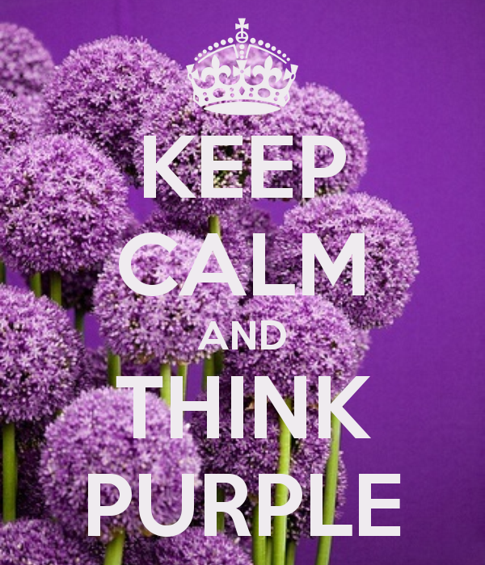

Quotes
Hier verzamel ik quotes uit mijn favoriete boeken.

“It is said that your life flashes before your eyes just before you die. That is true, it's called Life.”
“It is said that your life flashes before your eyes just before you die. That is true, it's called Life.”
“A man who will not listen carefully to advice honestly given is a fool. Of course, a man who blindly takes any advice he receives is a bigger fool.”
“Life is like riding a bicycle. To keep your balance, you must keep moving.”
“You only live once. But if you do it right, once is enough.”
“Do not judge me by my successes. Judge me by how many times I fell down and got back up again.”
“Coming back to where you started is not the same as never leaving.”
“Afscheid nemen is opnieuw beginnen.”